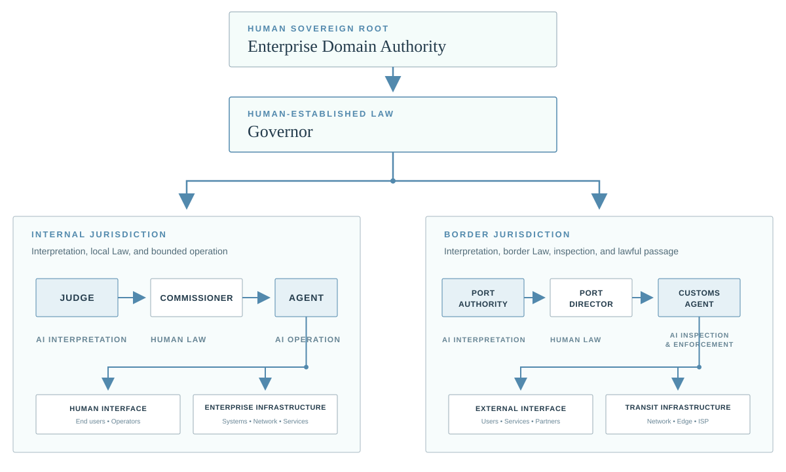

Judicial Instruments
Bounded Inquiries, Warrants, Orders, and emergency instruments derive from established Law and remain limited by Scope and duration.

CANONICAL ARCHITECTURE
A full JAZB architecture preserves a deliberate pattern: Human Authority, Human-Established Law, AI interpretation, subordinate Human-Established Law, and AI operation. Internal and Border Jurisdictions remain distinct.

SEPARATION BY DESIGN
The Judge and Port Authority interpret applicable Law within separate jurisdictions. Human-Established Law Layers localize governance beneath the Governor. Operational AI acts only within valid Authority. High-impact technical execution is separately validated through independent Actuation Authority.
Bounded Inquiries, Warrants, Orders, and emergency instruments derive from established Law and remain limited by Scope and duration.
Interpretive decisions do not become unrestricted technical power. Actuation validates the authorizing chain before execution.
Law, delegation, decisions, Instruments, and actuation remain traceable to legitimate human-established provenance.
Material governed actions preserve the records needed to reconstruct why an action was authorized, denied, contained, or revoked.
Border Jurisdiction governs lawful passage at the actual external Organizational Boundary. Internal access does not imply export Authority.
Bypass, substitution, Law-state manipulation, unmanaged external paths, and control evasion are treated as governance attacks, not as new Authority.